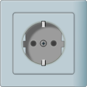

According to Gartner, Inc. (a technology research and advisory
corporation), there will be nearly 26 billion devices on the
Internet of Things by 2020.[21] ABI Research estimates that more
than 30 billion devices will be wirelessly connected to the
Internet of Things (Internet of Everything) by 2020.[22]
As per a recent survey and study done by Pew Research Internet
Project, a
large majority of the technology experts and engaged Internet
users who responded—83 percent—agreed with the notion that the
Internet/Cloud of Things, embedded and wearable computing
(and the corresponding dynamic systems [23]) will have widespread
and beneficial effects by 2025.[24] It is, as such, clear that the
IoT will consist of a very large number of devices being connected
to the Internet.[25] In an active move to accommodate new and
emerging technological innovation, the UK Government, in their
2015 budget, allocated £40,000,000 towards research into the
Internet of Things. The Chancellor, Rt Hon George Osborne,
posited that the Internet of Things is the next stage of the
information revolution and referenced the inter-connectivity
of everything from urban transport to medical devices to
household appliances.
Integration with the Internet implies that devices will utilize an IP address as a unique identifier. However, due to the limited address space of IPv4 (which allows for 4.3 billion unique addresses), objects in the IoT will have to use IPv6 to accommodate the extremely large address space required. Objects in the IoT will not only be devices with sensory capabilities, but also provide actuation capabilities (e.g., bulbs or locks controlled over the Internet).[32] To a large extent, the future of the Internet of Things will not be possible without the support of IPv6; and consequently the global adoption of IPv6 in the coming years will be critical for the successful development of the IoT in the future.
| Image | Application Area | Description |
|---|---|---|
| Information from Wikipedia . | ||
| Media | In order to home into the manner in which the Internet of Things (IoT), the Media and Big Data are interconnected, it is first necessary to provide some context into the mechanism used for media process. It has been suggested by Nick Couldry and Joseph Turow that Practitioners in Media approach Big Data as many actionable points of information about millions of individuals. The industry appears to be moving away from the traditional approach of using specific media environments such as newspapers, magazines, or television shows and instead tap into consumers with technologies that reach targeted people at optimal times in optimal locations. The ultimate aim is of course to serve, or convey, a message or content that is (statistically speaking) in line with the consumer's mindset. For example, publishing environments are increasingly tailoring messages (advertisements) and content (articles) to appeal to consumers that have been exclusively gleaned through various data-mining activities | |
| Environmental monitoring | Environmental monitoring applications of the IoT typically utilize sensors to assist in environmental protection by monitoring air or water quality,[4] atmospheric or soil conditions,[42] and can even include areas like monitoring the movements of wildlife and their habitats.[43] Development of resource[44] constrained devices connected to the Internet also means that other applications like earthquake or tsunami early-warning systems can also be used by emergency services to provide more effective aid. IoT devices in this application typically span a large geographic area and can also be mobile. | |
| Infrastructure management | Monitoring and controlling operations of urban and rural infrastructures like bridges, railway tracks, on- and offshore- wind-farms is a key application of the IoT.[45] The IoT infrastructure can be used for monitoring any events or changes in structural conditions that can compromise safety and increase risk. It can also be utilized for scheduling repair and maintenance activities in an efficient manner, by coordinating tasks between different service providers and users of these facilities.[32] IoT devices can also be used to control critical infrastructure like bridges to provide access to ships. Usage of IoT devices for monitoring and operating infrastructure is likely to improve incident management and emergency response coordination, and quality of service, up-times and reduce costs of operation in all infrastructure related areas.[46] Even areas such as waste management stand to benefit from automation and optimization that could be brought in by the IoT. | |
| Manufacturing | Digital control systems to automate process controls, operator tools and service information systems to optimize plant safety and security are within the purview of the IoT.[45] But it also extends itself to asset management via predictive maintenance, statistical evaluation, and measurements to maximize reliability.[49] Smart industrial management systems can also be integrated with the Smart Grid, thereby enabling real-time energy optimization. Measurements, automated controls, plant optimization, health and safety management, and other functions are provided by a large number of networked sensors. | |
|  | Energy management | Integration of sensing and actuation systems, connected to the Internet, is likely to optimize energy consumption as a whole.[32] It is expected that IoT devices will be integrated into all forms of energy consuming devices (switches, power outlets, bulbs, televisions, etc.) and be able to communicate with the utility supply company in order to effectively balance power generation and energy usage.[50] Such devices would also offer the opportunity for users to remotely control their devices, or centrally manage them via a cloud based interface, and enable advanced functions like scheduling (e.g., remotely powering on or off heating systems, controlling ovens, changing lighting conditions etc.).[32] In fact, a few systems that allow remote control of electric outlets are already available in the market, e.g., Belkin's WeMo,[51] Ambery Remote Power Switch,[52] Budderfly [53] etc. |
| Building and home automation | IoT devices can be used to monitor and control the mechanical, electrical and electronic systems used in various types of buildings (e.g., public and private, industrial, institutions, or residential).[32] Home automation systems, like other building automation systems, are typically used to control lighting, heating, ventilation, air conditioning, appliances, communication systems, entertainment and home security devices to improve convenience, comfort, energy efficiency, and security. | |
| Transportation | The IoT can assist in integration of communications, control, and information processing across various transportation systems. Application of the IoT extends to all aspects of transportation systems, i.e. the vehicle, the infrastructure, and the driver or user. Dynamic interaction between these components of a transport system enables inter and intra vehicular communication, smart traffic control, smart parking, electronic toll collection systems, logistic and fleet management, vehicle control, and safety and road assistance. | |